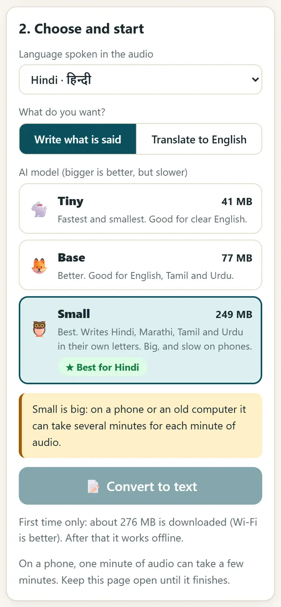

हिंदी व्हॉइस टायपिंग: बोलून मोफत टेक्स्ट कसे बनवावे
लांब मेसेज, नोट्स किंवा पत्रे टाइप करून कंटाळलात? तुमचा आवाज रेकॉर्ड करा किंवा WhatsApp ची व्हॉइस नोट निवडा, आणि AI ते लिहून देईल. सगळे तुमच्याच डिव्हाइसवर चालते, त्यामुळे खासगी ऑडिओ खासगीच राहतो.
थोडक्यात उत्तर
व्हॉइस नोटमधून मजकूर उघडा, “माइकने रेकॉर्ड करा” दाबून बोला (किंवा व्हॉइस नोटसाठी “फाइल निवडा” दाबा). बोललेली भाषा निवडा, हिंदी अक्षरांत हिंदी हवी असेल तर “स्मॉल” मॉडेल घ्या आणि “मजकुरात बदला” दाबा. टेक्स्ट वाचा, चुकलेले शब्द दुरुस्त करा, मग कॉपी करा किंवा “मजकूर (.txt)” डाउनलोड करा. इंग्रजी खूप अचूक येते; हिंदी “स्मॉल” ने बऱ्यापैकी येते आणि एकदा तपासावी लागते.
5 पायऱ्यांत आवाजातून टेक्स्ट
-
आवाज रेकॉर्ड करा किंवा फाइल जोडा
व्हॉइस नोटमधून मजकूर उघडा. “माइकने रेकॉर्ड करा” दाबा, स्पष्ट बोला आणि “थांबवा आणि वापरा” दाबा. किंवा “फाइल निवडा” दाबून WhatsApp ची व्हॉइस नोट, एखादे रेकॉर्डिंग किंवा व्हिडिओ निवडा (30 मिनिटांपर्यंत).
-
बोललेली भाषा निवडा
“ऑडिओमध्ये बोललेली भाषा” मध्ये हिंदी, इंग्रजी किंवा दुसरी भाषा निवडा. भाषा आपोआप ओळखण्याचा पर्यायही चालतो, पण स्वतः निवडणे जास्त खात्रीचे.
-
AI मॉडेल निवडा
“टायनी” आणि “बेस” वेगवान आहेत आणि स्पष्ट इंग्रजीसाठी चांगले. हिंदी अक्षरांत हिंदीसाठी “स्मॉल” निवडा: ते सर्वात अचूक आहे, पण त्याचे डाउनलोड मोठे आहे आणि ते हळू आहे, म्हणून फोनपेक्षा लॅपटॉप किंवा कॉम्प्युटर बरा.

बोललेली भाषा आणि AI मॉडेल निवडा. -
टेक्स्टमध्ये बदला
“मजकुरात बदला” दाबा आणि पान उघडे ठेवा. पहिल्यांदा AI मॉडेल एकदाच डाउनलोड होते (Wi-Fi बरे). टेक्स्ट भागाभागाने येते.
-
दुरुस्त करा आणि वापरा
तो भाग पुन्हा ऐकायला वेळेवर टॅप करा, आणि शब्द दुरुस्त करायला टेक्स्टवर टॅप करा. मग टेक्स्ट कॉपी करा, किंवा “मजकूर (.txt)” डाउनलोड करा, किंवा व्हिडिओसाठी “सबटायटल (.srt)”.

टेक्स्ट वेळेसह येते. शब्द दुरुस्त करायला त्यावर टॅप करा.
हे किती अचूक आहे? खरी गोष्ट
- इंग्रजी: प्रत्येक मॉडेलने खूप चांगली, फोनवरही.
- हिंदी: “स्मॉल” ने बऱ्यापैकी. काही शब्द चुकू शकतात, विशेषतः नावे, आकडे आणि हिंदी-इंग्रजी मिसळलेले बोलणे, म्हणून पाठवण्याआधी एकदा वाचा.
- फोनवर “स्मॉल” खूप जड पडू शकते आणि एरर देऊन थांबू शकते. तिथे “बेस” चालते, पण हिंदीचे शुद्धलेखन कच्चे येते.
- हे लाइव्ह टायपिंग नाही: आधी तुम्ही बोलता, टेक्स्ट नंतर येते. स्पष्ट बोला, एका वेळी एकच व्यक्ती, आणि आजूबाजूला आवाज कमी ठेवा. ओडिया अजून उपलब्ध नाही.
नवे मोफत टूल्स आणि हिंदीत AI चे धडे मिळवा
आमच्या ईमेल लिस्टमध्ये सामील व्हा: नवीन मोफत ॲप्स, नवीन मार्गदर्शिका आणि AI वरील हिंदी व्हिडिओ धड्यांची माहिती मिळत राहील. स्पॅम नाही.
फक्त प्रौढांसाठी (18+). तुम्ही कधीही नाव काढून घेऊ शकता.
आम्ही हे टूल्स का सुचवतो
- सर्वांसाठी मोफत: जाहिराती नाहीत, साइन-अप नाही, पेड प्लॅन नाही.
- खाजगी: तुमच्या फाइल्स आणि माहिती तुमच्याच डिव्हाइसवर राहते.
- फोन, लॅपटॉप किंवा स्मार्टबोर्डवर चालतात, आणि एकदा उघडल्यावर इंटरनेटशिवायही.
- मराठी आणि हिंदीसह 12 भाषांमध्ये.
व्हिडिओतून शिकायला आवडतं? आमच्या YouTube चॅनेलवर AI आणि मोफत टूल्सचे हिंदी धडे पाहा.
वारंवार विचारले जाणारे प्रश्न
हिंदी बोलल्यावर हे हिंदी अक्षरांत लिहिते का?
हो, “स्मॉल” मॉडेलने. लहान मॉडेल हिंदीसाठी कमी खात्रीची आहेत: “बेस” कच्चे शुद्धलेखन देते. इंग्रजी प्रत्येक मॉडेल चांगली लिहिते.
माझा आवाज कुठे अपलोड होतो का?
नाही. फक्त AI मॉडेल तुमच्या डिव्हाइसवर डाउनलोड होते, तेही एकदाच. तुमची रेकॉर्डिंग आणि व्हॉइस नोट कधीही अपलोड होत नाहीत, त्यामुळे खासगी मेसेज आणि मीटिंगसाठी हे सुरक्षित आहे.
WhatsApp ची व्हॉइस नोट टेक्स्टमध्ये कशी बदलायची?
WhatsApp मध्ये व्हॉइस नोट दाबून धरा, Share वर टॅप करा आणि ती फोनमध्ये सेव्ह करा. मग इथे “फाइल निवडा” ने ती निवडा आणि “मजकुरात बदला” दाबा.
आणखी कोणत्या भाषा चालतात?
“स्मॉल” ने हिंदी, मराठी, तमिळ आणि उर्दू त्यांच्या स्वतःच्या अक्षरांत लिहिल्या जातात. इतर भारतीय भाषा इंग्रजी अक्षरांत येतात; त्यांच्यासाठी बहुधा “इंग्रजीत भाषांतर” जास्त उपयोगी. ओडिया अजून उपलब्ध नाही.
याला किती वेळ लागतो?
ते तुमच्या डिव्हाइसवर आणि मॉडेलवर अवलंबून आहे. फोनवर एका मिनिटाच्या ऑडिओला काही मिनिटे लागू शकतात. पहिल्यांदा मॉडेलही एकदा डाउनलोड होते: सुमारे 70 MB (“टायनी”) ते सुमारे 280 MB (“स्मॉल”).
उपयोगी वाटली?
मित्राला, सहकाऱ्यांना किंवा तुमच्या शाळेच्या WhatsApp ग्रुपमध्ये पाठवा.